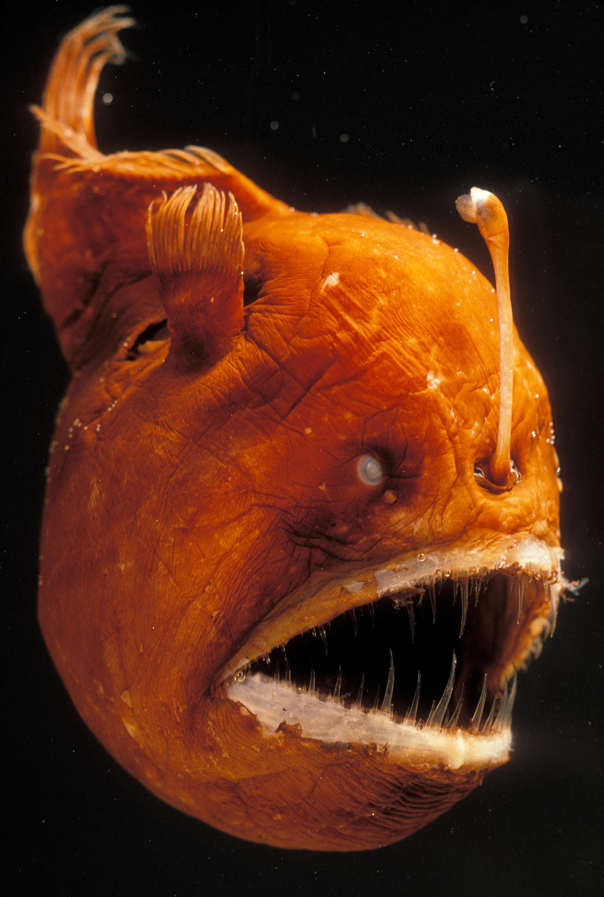

Angler Fish
Don't trust this light at the end of the tunnel

About the Angler Fish
The stereotypical Angler Fish that comes to mind is usually the female! These fish use a tiny bioluminescent bulb called an illicium that hangs from their front fin in order to lure in their prey. The bulb appears to other creatures around as a small prey for them, when in fact they will become the prey. They are very carnivorous due to the lack of phytoplankton or plants within the Bathypelagic Zone where they live.
These fish will consume anything from crustaceans like shrimp or snails to fish up to twice its size because of the flexibility of its jaw and body. The size of angler fish ranges from 8-40 inches and they can weigh up to 110 pounds!
When it comes to male angler fish, they lose their ability to digest or absorb nutrients once they reach adulthood. Because of this, the males will latch onto the more productive female fish. This allows them to eventually fuse together through blood. Males will gain their nutrients through whatever is consumed by the female angler fish that they fuse with! A female angler can carry up to 6 males with her at a single time.
Learn more about the Angler Fish at these sites:
National Geographic - Angler Fish
UCSB ScienceLine - What do Angler Fish Eat?